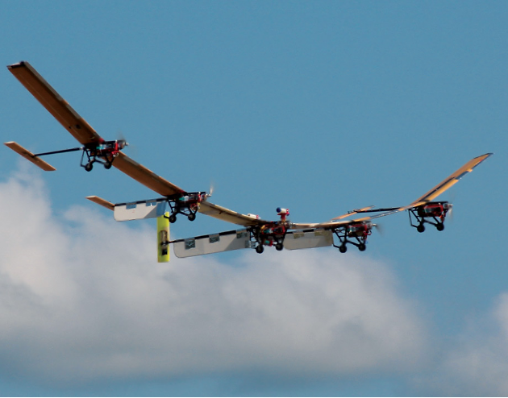
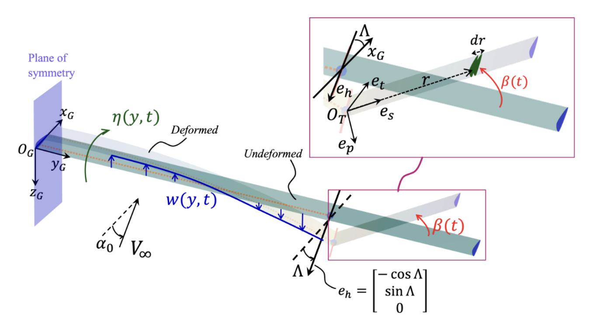

Free-folding wingtip (FWT) for aircraft load alleviation


Abstract
This thesis investigates the nonlinear aeroelastic behaviour of the flexible HX-HALE aircraft equipped with flared folding wingtips. The vehicle response is analysed under discrete ‘1-cos’ gusts, continuous-sine gusts and uniform gusts. High-fidelity SHARPy simulations are first used to assess the effects of hinge flare angle and wingtip size on discrete-gust load alleviation. The results show that both parameters strongly influence the transient wing-root bending moment and folding-wingtip response. A wingtip length of approximately 0.5 m, corresponding to about 50% of the outermost span, reduces the maximum wing-root bending moment by around 40%, while larger wingtips can amplify the response because of increased span loading and stronger bending–flapping coupling. Early wingtip-release strategies are also briefly investigated and show conceptual promise for further load alleviation.
The second major contribution is the development of a three-degree-of-freedom reduced-order model (ROM) based on simplified structural dynamics and quasi-steady aerodynamics. The model includes inner-wing bending, inner-wing torsion and wingtip folding motion, and captures the nonlinear effects introduced by the flared hinge axis at substantially lower computational cost than SHARPy. Verification against SHARPy results shows that the ROM captures the main trends and transient features of the coupled bending–flapping response. Rigid-body-motion effects, which are present in SHARPy but not directly included in the ROM, are also shown to explain a significant part of the discrepancy between the two models.
The ROM is then used for broader disturbance and stability studies. Continuous-sine excitation identifies a dominant natural frequency of approximately 1.2 Hz, while increasing gust intensity produces nonlinear response-amplitude growth. Continuous uniform gusts reveal limit-cycle oscillations associated with a subcritical Hopf bifurcation and hysteresis. Finally, active feedback control using commanded flaps is shown to reduce loads and excessive wingtip motion, with the main-wing flap being more effective than the wingtip flap. Overall, the thesis demonstrates that selected folding-wingtip configurations can provide effective gust load alleviation and that a validated ROM can offer useful design insight at significantly reduced computational cost.
Links
- Full thesis PDF (29.4 MB, 56 pages) — Download PDF